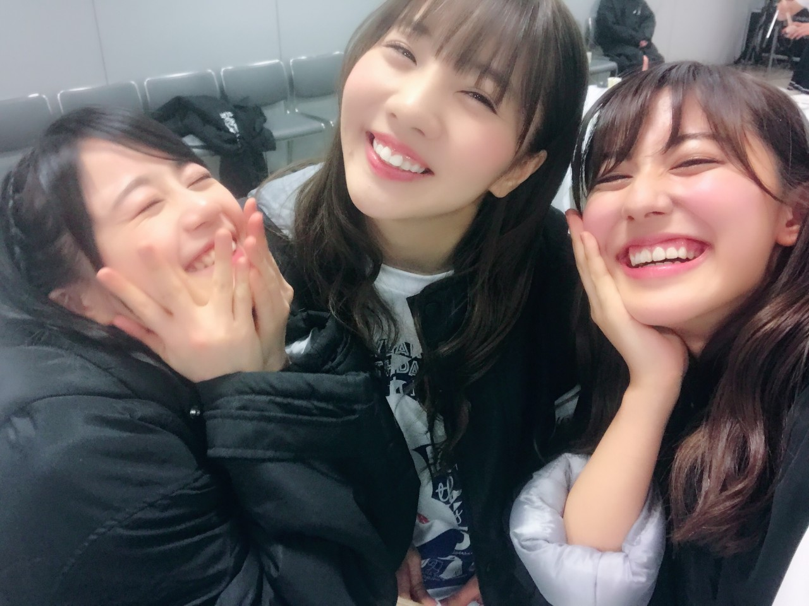
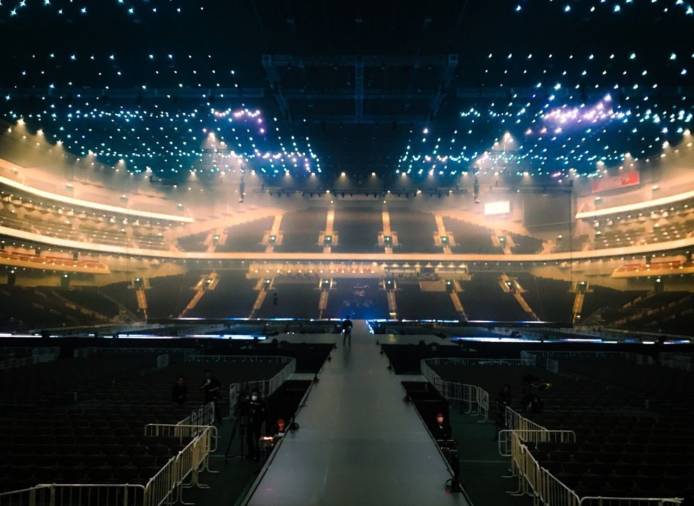
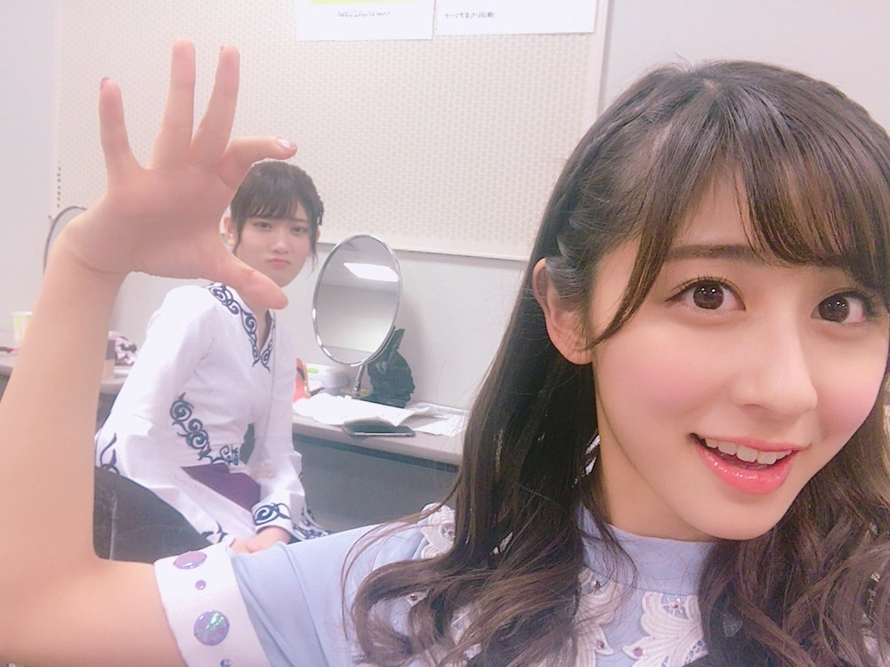

ちはるーむへようこそ

昨日の私たち3人の写真が
好評で嬉しい(﹡ˆ ˆ﹡)
この写真の後お寿司をいっぱい食べました。笑
美味しかったね☺︎
#chihashot

最初にステージに上がった時に
広くて感動して思わず撮った写真。
スタジアムモードってこんなに大きいんだ！
と素直に嬉しかった...
花道にライトがあるのも素敵だったけど
わたしは何より上の照明が
星空みたいになってるのが大好きだった。
曲に合わせて青や緑やピンクや赤、
色々な色に変わって
びっくりするほど綺麗でした。
会場全体のサイリウムも良く見えました...！
素敵な景色をありがとうございましたヽ(；；)丿
------------------------------------------------♡
♬ ChihaMusic
「行くあてのない僕たち」乃木坂46
実はこの曲大好き。
2人の空気感や雰囲気に合ってる。
とにかくかっこいい。
"行くあてのない 僕らの旅は
どんな結末が待つのだろう？"
サビの始まりのこの部分が好き！
一気に盛り上がって行く感じ。
イントロも間奏も良い。
思わず見ている時一緒に踊ってしまう。
自分が出てない曲を
見ながらうろ覚えで踊るのが好き。

つまみ純奈。
仲良し。
頑張ってつまもうとしてるから
わたしの顔必死すぎる...笑
おやすみ
斎藤ちはる